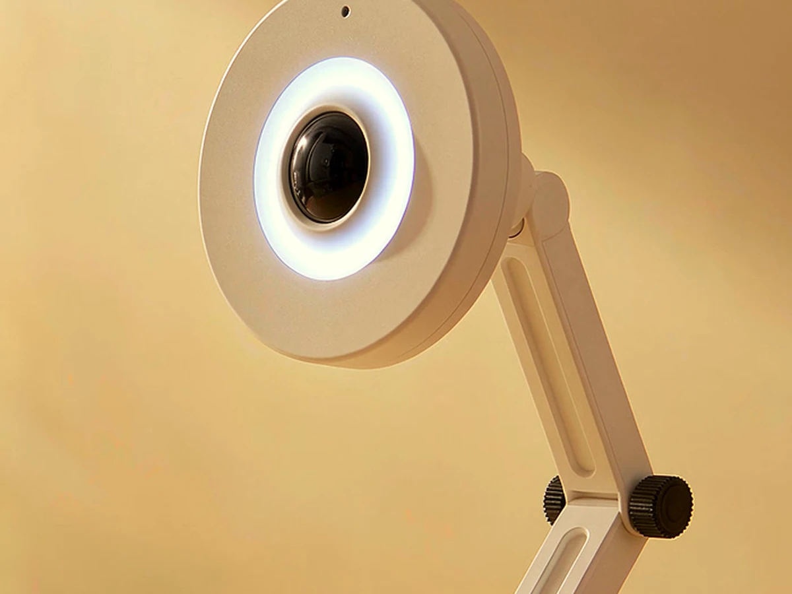
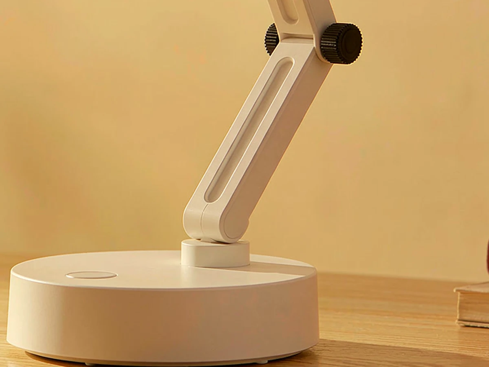

回答，从扬声器出来
云端 ASR 听懂问题，大模型组织答案，TTS 读出来。回答控制在几句话内，不打断手上的事。
STRUCTURE / 整机形态
底座里压着配重与电源板，电池位也留在里面；一根立柱把头部送到视线高度。立柱中段只有一个外露的黑色摩擦关节，其余机构都藏在壳里。
 REV C / 点开看大图
REV C / 点开看大图
整机高度，手动调角。
下立柱 110、上立柱 96，中间一个关节。
底座旋转、中段调角、头部俯仰；其中 2 轴由舵机驱动。
白壳全包，视窗 ⌀28，导光环 ⌀48。
结构尺寸为设计目标，外观以场景渲染为准；尚未进入工程样机验证，尺寸以实测为准。

REV C / 点开看大图
REV C / 点开看大图01 / FEEDBACK
语音负责内容，动作负责存在感，屏幕与灯环负责状态。三者同步，用户不必盯着设备，也知道它在听、在想，还是已经回答完了。
云端 ASR 听懂问题，大模型组织答案，TTS 读出来。回答控制在几句话内，不打断手上的事。
2 个总线舵机负责最必要的两个动作：开口时转向你，答完轻轻点头。到位即停，不持续嗡鸣。
聆听、思考、回答、计时各有表情。屏幕只给一眼能懂的信息，不要求你读完一段文字。
WS2812B 灯环只表达状态：待机、聆听、回答、提醒。它不做照明，也不参与阅读光。
02 / MOVEMENT
总线舵机让头部转向说话的人，或在回答结束时轻轻点头。它移动得很慢，到位后就松开舵机，把嗡嗡声留在机械里，而不是房间里。
 ONE GESTURE / TWO AXES
YAW / 转头
PITCH / 点头
ONE GESTURE / TWO AXES
YAW / 转头
PITCH / 点头
03 / VOICE & CONTROL
不需要先打开 App，也不需要记住一套指令表。按下对话键说话，剩下的交给云端大脑；物理按键仍然保留，作为最可靠的兜底。
04 / TIME
下班后的两小时，不需要更多提醒，而是更少打断。LAMP—1 把番茄钟、休息提醒和今日时长放在桌面上：一句话开始，一次点头结束。
说一句「开始 45 分钟专注」，屏幕进入计时，灯环缓慢呼吸。
45 MIN · FOCUS计时结束，语音提醒 + 转头看向你；休息十分钟，不碰手机。
10 MIN · BREAK问一句「今天学了多久」，它播报本次专注时长，然后进入待机。
QUERY · TODAY说一句就开始。倒计时结束会语音提醒，屏幕与灯环同步提示，不依赖手机。
05 / BOUNDARIES
少做一点，反而更容易把该做的做好。下面四条是 LAMP—1 主动划定的边界，也是它和「什么都能做」的桌面设备最大的区别。
照明模组已取消。灯环只表达状态，不做阅读光，也不参与色温调节。
GC0308 第一阶段只做人员在场检测。「在桌前」不等于「在学习」，不对外宣传学习状态识别。
首版用按键开始拾音，避免误唤醒。只有按下对话键才上传语音，隐私边界清楚。
网络只负责问答。计时、状态提示与本地交互留在设备上，断网时仍然可用。
结构、热与寿命数据仍待工程样机验证。目前页面展示的是设计目标与 REV C 概念渲染。
查看完整规格